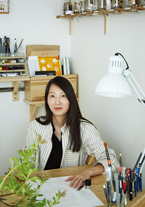
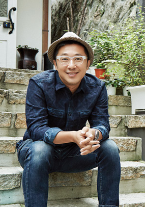
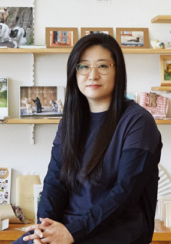
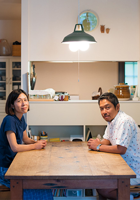
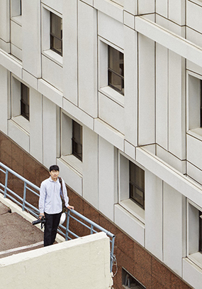
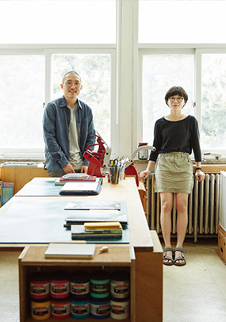
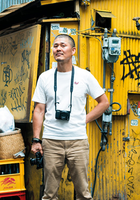

-

FINE ART
식물세계의 내밀한 기록, 식물세밀화가 신혜우
흥미롭게도 이미 17~18세기에 유럽에서 전성기를 누렸던 보태니컬 아트, 제대로 된 식물세밀화를 그리는 사람이 21세기 최첨단의 대한민국 서울에 있다. 식물학자이자 식물세밀화가로 활동하는 신혜우 씨다. 그는 지난 2013년 보태니컬 아트 쇼인 영국왕립원예협회 식물세밀화 전시회(The Royal Horticultural Society Botanical Art Show)에서 한국인 최초로 최고 작품상(Best Exhibit)을 수상했다. 국내에 보태니컬 아트라는 용어도 생소하던 때다. 그림을 잔뜩 보고 책도 소개받았다. 식물을 공부하는 것처럼 그림도 공부해야 한다는 조언도 들었다...
-

PHOTOGRAPH
일상을 관찰하는 것에서부터 기록이 시작된다, 동네기록자 설재우
설재우 씨는 서촌에서 나고 자란 토박이다. 한동네에서 태어나 사춘기를 보내고 이곳에서 한 아이의 아버지가 되었다. 30년이 넘는 세월을 서촌에 뿌리내리고 살았지만 사실 이 동네에서는 30년으로는 명함도 내밀지 못한다. 한 평생 서촌에서 살아온 동네 어르신은 물론 3대가...
-

LITERATURE
고양이의 집사가 되다, 작가 고경원
고경원 씨가 고양이 사진을 찍기 시작한 것은 15년 전인 2002년 7월의 일이다. 인터넷 서점에서 운영하는 웹진 기자로 막 사회생활을 시작한 무렵이었다. 미술을 전공한 그는 웹진에서 작가 인터뷰와 책 소개, 전시 기사를 맡았다. 매일 종로의 서점들과 인사동, 사간동에 있는 갤러리를 한 바퀴 돌았다. 그날도 그렇게 출근하는 길이었다. 독립하면 고양이를 키워야겠다고 생각했지만 당시에는 불가능했다. 그렇다면 당장은 사진이라도 갖고 싶었다...
-
MEDIA ART
디지털과 사람과의 소통, 환상적인 미디어 아티스트 그룹 팀랩
디지털 아트 그룹 팀랩이 세계에서 두번째로 전개하는 이번 상설아트전은, 계절의 흐름에 맞춰 흩날리는 꽃들의 변화와 빛의 조각들이 만들어내는 몽환적인 춤의 향연 등 아트 작품을 감상 할 수 있는 ‘댄스! 아트 뮤지엄’, 모두가 함께 창조적인 체험을 경험하는 ‘런&플레이! 퓨쳐파크’, 두가지 테마가 조화롭게 구성되어 있어 성인과 아이들 모두 즐길 수 있다. 팀랩월드에서 만나게 될 아트 작품 중, 우주 공간을 표현한 인터렉티브 설치 미술 ‘크리스탈 유니버스’는 수 많은 LED로 표현된 빛의 집합으로, 입체적인 조작을 만들어내어 화려함과 장엄함을 자아낸다...
-

LITERATURE
타인의 도시락을 들여다 보다, 아베 부부
다른 사람의 도시락에는 도대체 무엇이 들었을까? 도시락은 어린 시절, 우리의 가장 큰 즐거움이었다. 친구의 도시락 반찬을 구경하고 맛보는 일 또한 흥미로웠다. 그것은 타인의 몸, 타인의 정신, 타인의 가정을 간접 체험하는 일이자 지극히 개인적인 사생활의 공유이기도 했다. 타인의 도시락이 마냥 궁금했던 아베 사토루, 아베 나오미 부부는 도시락 사진 찍기 프로젝트를 진행 중이다. 사진을 찍고 보니, 다른 사람의 도시락을 궁금해한 사람은 아베 부부만이 아니었다...
-

PHOTOGRAPH
정방형의 사진이 새로운 기록으로 남았다, 이경준
‘세상의 순간을 포착하고 공유한다(Capturing and Sharing the World’s Moments)’라는 슬로건과 함께 인스타그램이 세상에 등장한 것이 2010년이다.인스타그램이 사진을 통해 커뮤니케이션하는 플랫폼으로 확고히 자리 잡으면서부터 이를 소셜 미디어의 하나로만 취급하던 사진가들도 인스타그램으로 대중과 소통하기 시작했고 아예 인스타그램의 고유성을 활용해 자신의 사진을 알리고 일하는 포토그래퍼도 등장했다. 서울의 패턴을 사진으로 담아내는 사진가 이경준도 그중 한 사람이다...
-

LITERATURE
잊히는 것을 기록하다, 마그네틱5
‘마그네틱5magnetic5’는 독립출판물이라는 것을 주로 만든다. 관찰하고 기록하고 사진을 찍고 글을 얹어서 작은 책을 만드는 작업을 반복한다. 마그네틱5의 작업 가운데 가장 인기가 많은 <할머니의 요리책>은 이들의 작업 방식을 잘 보여준다. 마른 멸치로 추정되는 하얀색 멸치 그림이 제목 대신 자리 잡은 파란 표지를 펼치면 ‘제이림은최윤건이니다 저는나이가9심이살입니다 그레서글씨도몰나서잘못서서요 잘바주요(제 이름은 최윤건입니다. 저는 나이가 92살입니다. 그래서 글씨도 몰라서 잘 못 써서요. 잘 봐줘요.)’라는 글씨와 만나게 된다. 박린 작가의 할머니인 최윤건 님의 글이다...
-

PHOTOGRAPH
야쿠자를 기록한 남자, 양승우
찍고 싶은 것만 찍기 위해 여러 가지 일로 생계를 유지한다. 신주쿠의 한국인 술집 종업원, 다양한 공사 현장의 파견 노동자를 전전하고 무연고자의 사망 후 처리를 하는 장의사에서도 일했다. 1년에 한두 번은 유전 찾기에도 나선다. 콩고, 말레이시아 등을 찾아가 유전이나 천연가스를 찾아내는 일인데 위험천만하다. “천연가스가 있는 곳은 라이터를 켜면 바로 ‘펑’ 하고 터지는 소리가 들려요.” 콩고에선 감금당하기도 했다며 아무렇지 않은 듯 웃는 그가 도몬켄상 수상 소식을 들었을 때는 새로 생긴 건물에 카펫을 까는 일을 하고 있었다고...